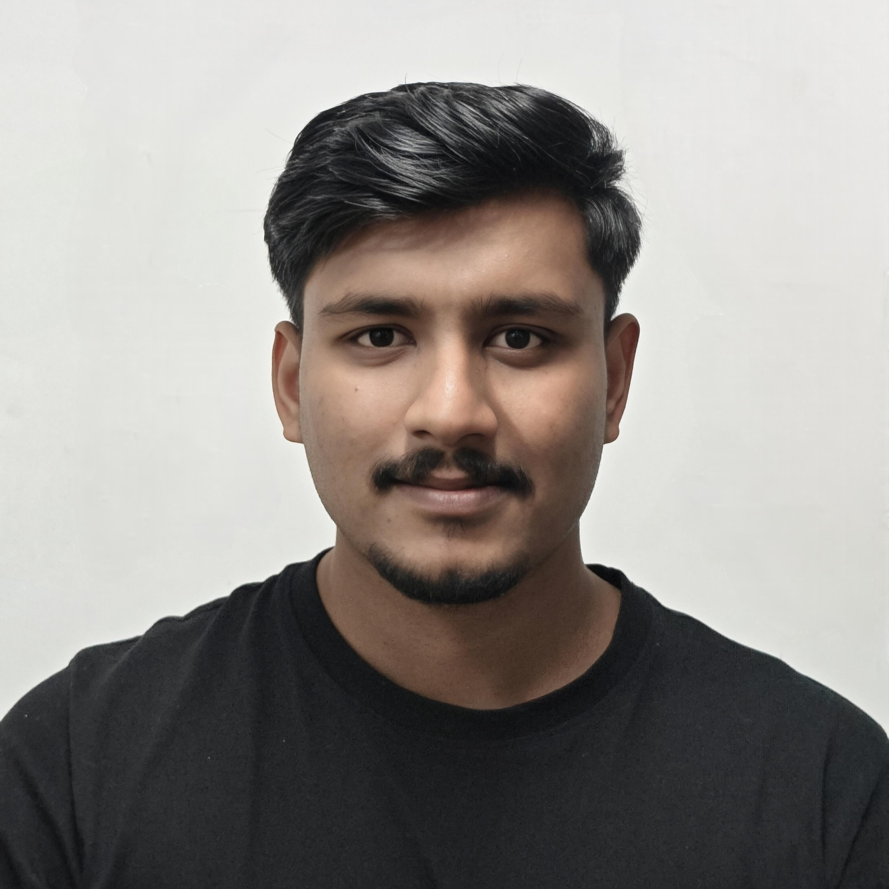

Abhiram K
Quantum Optics Researcher & Hardware Engineering
View GitHub Profile
abhiramk@iitg.ac.in
|
LinkedIn
Experience & Research
Research Scholar
Jan 2026 – Present | IIT Guwahati
Working on the construction of a quantum processor utilizing trapped Rubidium atoms.
Designing and fabricating custom laboratory infrastructure and electronic hardware for optical experiments.
Junior Research Fellow
Aug 2025 – Dec 2025 | IIT Guwahati
Assisted in the initial setup of neutral atom trapping systems.
Developed control electronics for laser stability and atom manipulation.
Project Intern | CQUERE, TCG CREST
Apr 2025 – Aug 2025 | Kolkata
Worked on Efficient Quantum State Preparation under the guidance of Dr. Shibdas Roy.
Educational Background
PhD Physics
Jan 2026 - Present | IIT Guwahati
M.Sc. Physics
Graduated Jul 2024 | University Of Delhi
B.Sc(Hons). Physics
Graduated Jul 2022 | Hindu College, DU
Technical Arsenal
Quantum Circuits & Algorithms
Kicad & PCB designing
Qiskit
Electronic Circuit Design
Sensors & Microcontrollers
Fusion 360 / FreeCAD
Python, C / C++ (Arduino)
Assembly Language